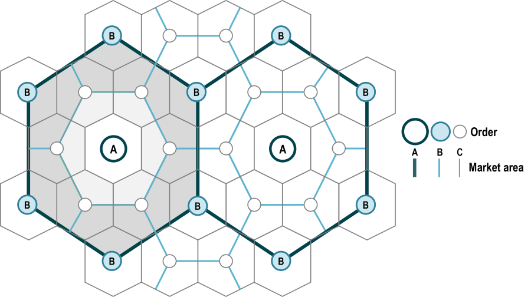

4주차. 지역경제에서의 도시들
지난 시간 — 도시는 왜, 어떻게 생기고 커지는가
2강 — 도시의 생성
가내생산모형의 세 가정을 하나씩 완화하면 도시가 생김
비교우위 + 교환의 규모의 경제 → 교역도시
생산의 규모의 경제 → 공장도시
두 경우 모두 통근·통행을 아끼려 가까이 살고,
토지 경쟁이 가격을 올려 인구밀도가 높아짐
3강 — 도시는 왜 커지고, 기업은 어디에 입지하는가
집적의 경제(중간재 공유·노동풀링·숙련매칭·지식파급)가 집적의 불경제(통근비용·오염 등)와 겨뤄 균형 군집규모를 정함
기업의 입지선택은 운송비용(자원지향적·시장지향적)·노동비용·에너지비용과 다른 기업이 주는 집적의 경제 사이의 힘겨루기 — 집적의 이익이 클수록 기업들은 서로 곁에 모임
→ 오늘은 소비자 관점에서 도시의 규모·다양성이 어떻게 갈리는지
(독점적 경쟁·중심지이론),
그리고 이 도시들이 노동시장으로 연결된
하나의 지역경제에서 규모가 어떻게 정해지는지 봄
CHAPTER 06 소비자도시와 중심지
교재 p.110~126
이발사: 당신은 몇 살입니까, 꼬마 신사분?
빌: 여덟살
이발사: 머리 깎는 것을 원합니까?
빌: 글쎄요. 저는 명백히 면도를 위해 오지는 않았습니다.
이제까지는 기업의 관점이었음
이 장에서는 소비자의 관점으로 전환함
소비재와 소비자 서비스에 대한 시장으로서의 도시
소비자 의사결정이 어떻게 다양한 규모와 제품 다양성을 지닌 도시들을 생성하는가
01 입지에서의 독점적 경쟁
교재 p.110~114
독점적 경쟁 (monopolistic competition)
1. 진입에 대한 인위적인 장애물의 부재
특허나 규제가 없음
다만 시장 진입에는 비용이 들며 이를 고정된 창업비용으로 모형화함
식당업에 진입하려면 공간과 시설을 구입하거나 임대해야 함
2. 제품 차별화
기업들은 유사하지만 완전한 대체재는 아닌 제품을 생산함
공간적 맥락에서는 입지와 접근성에서 제품을 차별화한다 — 중심에 위치한 식당은 변두리 식당보다 접근성이 나음
→ 개별 기업은 좁게 차별화된 제품에 대해 지역 독점을 가짐 (인근에서 유일한 이탈리안 식당일 수 있음)
→ 그러나 입지나 제품에서 차별화된 다른 식당들과 경쟁함
독점의 결과
장기비용곡선
C(q) = k + cq
ac(q) = k/q + c
k는 설립비용, c는 생산의 한계비용
장기평균비용곡선은 음(−)의 기울기를 가지며 수평의 한계비용곡선에 점근적
→ 진입 장벽이 낮으므로 이것은 장기균형이 아님
→ 양(+)의 경제적 이윤을 보고 다른 기업들이 들어옴
복점 (duopolist)
두 번째 기업의 진입 — 잔여수요곡선이 왼쪽으로
두 번째 기업의 진입이 잔여수요곡선을 왼쪽으로 밀어냄
진입은 위(낮은 가격) · 오른쪽(기업당 작은 수량) · 아래(높은 평균비용)로부터 이윤을 줄임
→ 독점기업의 수요곡선 d₁이 복점기업의 수요곡선 d₂로 왼쪽 이동함
장기균형 — 사중복점
경제적 이윤이 영(0)이 될 때까지 진입
진입은 경제적 이윤이 영이 될 때까지 계속됨
여기서는 네 기업의 사중복점. 개별 기업에 대해 MR = MC(이윤극대화)이고 가격 = 평균비용(영의 이윤)
→ 퇴출할 유인도, 진입할 유인도 없음. 내쉬균형
→ 균형 기업의 수는 n* = Q*/q*
공간적 맥락에서의 독점적 경쟁
도시 중심에 이문을 얻고 있는 이탈리안 식당 하나에서 출발하자
두 번째 이탈리안 식당이 북부에 개업하면, 북부 사람들은 통행비용을 아끼려 새 식당으로 전환함
재화가 입지와 접근성 측면에서 차별화되는 것
진입이 가져오는 세 가지
(a) 시장가격이 감소하고
(b) 기업당 수량이 감소하며
(c) 생산의 평균비용이 증가한다
→ 기업당 이윤이 줄어듦
장기균형에서
가격은 평균비용과 일치하고 개별 기업은 영(0)의 경제적 이윤
즉 “정상” 회계이윤을 얻음
경제적 이윤 = 총수입 − 회계비용 − 기회비용
→ 개별 기업은 자신의 영업권에서 독점이지만 새로운 기업이 진입하면서 수요가 감소하여 균형에서 0의 경제적 이윤을 얻음
02 엔터테인먼트 기계로서의 도시들
왜 큰 도시가 더 다양한 재화를 갖는가 · 교재 p.114~118
최소시장규모
고정비용이 존재할 경우 기업이 유지되기 위한
최소의 시장규모
설치비용이 크면 장기평균비용곡선이 큰 생산량에 걸쳐 큰 음(−)의 기울기를 갖는다 — 큰 설치비용 = 큰 규모의 경제
평균비용곡선: ac(q) = k/q + c
도시 전체 수요 = d(p) · N
k는 설치비용, c는 한계비용, d(p)는 1인당 수요함수, N은 인구
→ 설치비용 k가 크면 규모의 경제를 누리기 위해 대규모 시장이 필요
→ 특정 상품에 대한 도시 전체의 수요가 크려면 1인당 수요가 높거나 인구가 많아야 함
도시 규모와 제품의 다양성
1인당 수요가 낮은 재화는 기업을 지탱하려면 큰 인구가 필요
→ 대도시에 다양한 재화와 서비스가 공급되는 이유를 설명
개별 사례
페루 음식 — 1인당 수요가 낮아 큰 도시에서만 존재
예술 — 미술관 전시, 음악과 연극의 라이브 공연이 큰 도시에 몰림
뇌외과 의사 — 수술 수요는 적고 시설·장비는 비싸 수백만 인구의 도시들에만 입지함
엔터테인먼트 기계로서의 도시들
생산 차원 — 집적의 경제(기업의 군집)가 대도시를 보다 크게 만듦
소비 차원 — 수요의 존재(인구의 군집)가 대도시를 보다 크게 만듦
→ 최근 도시의 성장은 소비자 도시의 관점에서 설명됨 — 뉴욕 · 시카고 · 샌프란시스코의 성장 (Glaeser, Kolko, and Saiz, 2001)
03 중심지이론
지역 전체에 몇 개의 도시가, 어떤 크기로 생기는가 · 교재 p.119~126
중심지 이론
독점적 경쟁모형이 하나의 지역경제를 다뤘다면,
중심지이론은 지역적 관점에서 두 질문에 답한다 —
① 얼마나 많은 도시들이 발달할 것인가 ② 도시들이 어떻게 규모와 소비재의 다양성에서 상이할 것인가
→ 지역 내에서 도시(중심지)의 개수와 분포, 위계를 제시하는 이론
Walter Christaller (1893–1969)
출처: https://link.springer.com/chapter/10.1007/978-3-031-90625-1_2
중심지이론: 단순화 가정
다음 다섯 가지를 단순화하여 가정한다
- 고정된 인구 — 지역의 인구는 고정되었음
- 편재한 생산요소들 — 모든 생산요소는 지역의 모든 입지에서 동일한 가격에 구매할 수 있음
- 균등한 수요 — 개별 제품에 대해 1인당 수요는 지역 내 모든 입지에서 동일함
- 완전한 대체재 — 상이한 기업들의 제품은 완전한 대체재. 비교구매의 이점이 없어 동일 제품 기업들의 군집 이점이 없음
- 재화들 간 보완성 부재 — 상이한 재화는 보완적이지 않아 상이한 재화 기업들의 군집 이점도 없음
중심지이론: 위계의 형성
→ 세 재화는 규모의 경제에 비해 1인당 수요에서 상이함
→ 이 차이가 도시의 크기와 다양성의 차이를 낳음
재화별 최소시장규모와 지역 내 개수
1인당 수요가 규모의 경제에 비해 의류는 작고, 식료품은 중간이며, 이발은 높음
중심지이론: 위계의 형성
원칙: 기업들은 고객까지의 거리를 최소화하는 중위입지를 고름
인구밀도가 균일하므로 의류상점 하나가 지역의 중심을 중위입지로 선택함
상점 근로자들이 그 인근에 살아 그곳의 인구밀도가 올라감
중심지이론: 위계의 형성
다음은 네 개의 식료품점의 입지를 생각해보자
인구밀도가 균일했다면 지역을 넷으로 나눠 각자 12마일 구역을 가졌겠지만,
의류상점이 만든 중심지의 인구밀도가 더 높아 그곳이 식료품점 둘을 지탱함
나머지 두 식료품점은 남은 구역을 둘로 나눠 각자의 중위입지에 자리함 — 그 근로자들이 인근에 살아 중심지 동·서에 중간 크기 도시 둘이 새로 생김
중심지이론: 위계의 형성
마지막으로 열여섯 명의 이발사의 입지를 생각해보자
큰 도시는 이발사 넷을, 중간 도시 각각은 둘을 지탱하고, 나머지 여덟 명은 남은 구역을 3,000명 단위로 나눠 작은 도시 여덟을 새로 만듦
→ 이 지역은 크기와 소비자 재화의 다양성에서 상이한 총 11개의 도시를 가짐
→ 큰 도시 1 + 중간 도시 2 + 작은 도시 8, 그리고 작은 도시는 이발소만 가짐
중심지이론: 위계의 형성
위계의 최상위에서 가장 큰 도시는 전체 조합의 재화를 공급하고, 최하위에서 가장 작은 도시들은 하나의 재화만 공급함
중심지이론: 면적 공간
최소요구치 (threshold) — 기업이 살아남는 데 필요한 최소시장규모
재화의 도달범위 (range) — 중심지에서 멀어질수록 판매량이 줄어들다 0이 되는 지점까지의 거리
→ 재화의 도달범위가 최소요구치보다 넓어야 중심지가 성립함
시장원리에 따른 중심지(도시) 분포

출처: Rodrigue, J-P., The Geography of Transport Systems, transportgeography.org
중심지이론으로부터의 세 통찰
- 도시규모와 다양성에서의 차이 — 규모의 경제가 없을 경우 세 재화 간 1인당 수요가 다르기 때문에 생김. 만일 세 재화가 동일한 1인당 수요를 갖는다면 세 재화의 시장구역이 일치해 이 지역은 네 개의 동일한 도시를 가질 것
- 큼은 적음을 의미한다 — 큰 도시가 공급하는 추가적인 재화는 1인당 수요가 낮은 재화. 그런 상점은 적은 숫자로 존재하므로 적은 수의 도시만 클 수 있음. 이발사는 매우 많아 작은 도시가 매우 많음
- 쇼핑 경로 — 소비자들은 보다 큰 도시로만 통행함. 중간 도시 주민은 옷을 사러 큰 도시로는 가지만 식료품을 사러 다른 중간 도시나 작은 도시, 즉 보다 낮은 위계의 도시로는 가지 않음
인디애나의 중심지역들, 2014
인구조사표준지역을 퍼즐 조각으로 그리고 헥타르당 노동자수(고용밀도)만큼 밀어 올린 지도

오설리반, 『오설리반의 도시경제학』 제9판, 박영사, 2022, 그림 6−6 (p.124)
→ 가장 큰 집중은 인디애나폴리스 대도시지역이며 주의 지리적 중심에 가까움
→ 여타 군집들은 면적이나 일자리 밀도로 표시된 다양한 크기의 도시들에 존재한다 — 중심지이론이 예측한 도시위계
가정을 완화하면
완전한 대체재 가정을 풀면
불완전 대체재라면 소비자는 비교구매에서 편익을 얻고, 판매상들은 떨어지기보다 군집함
보완성 부재 가정을 풀면
식료품점을 구두가게로 바꾸고 의류와 구두가 보완재라면,
구두가게는 원−스톱 구매를 위해 의류상점 가까이 큰 도시에 자리함
→ 도시들의 균형 수를 줄이고 가장 큰 도시의 크기를 키움
1인당 수요가 도시 규모에 따라 달라지면
전통 대중음악 — 작은 도시에서 1인당 수요가 높고 큰 도시에서 낮다면, 큰 도시가 공연장을 지탱할 수요를 갖지 못해 도시위계가 무너질 수 있음
다만 큰 도시는 큰 인구로 그 문제를 극복해 적어도 하나는 가짐
오페라 — 큰 도시에서 1인당 수요가 높고 작은 도시에서 영(0)이라면, 큰 도시는 자연히 더 커지고 도시위계는 강화됨
→ 위계는 덜 정연해지지만 핵심은 지속됨
→ 보다 큰 도시들은 보다 폭넓은 다양한 재화와 서비스를 제공함
CHAPTER 07 지역경제에서의 도시들
교재 p.132~145
“단순한 크기에 대해서는 걱정할 필요가 없다. 아이작 뉴턴 경은 하마보다 훨씬 작았지만, 그런 이유로 그를 보다 낮게 평가하지는 않는다.” — 버트랜드 러셀
전형적인 지역경제는 규모와 경제 범주에서 상이한 다수의 서로 연관된 도시들을 가지고 있음
장기 분석의 핵심 가정: 노동자와 기업은 도시들 간 이동에 있어 완전히 자유로움
01 도시효용과 도시규모
교재 p.132~138
도시가 커지면 효용은 어떻게 되는가
지역경제에서 도시들은 노동시장을 통해 연결됨
도시 간 노동 이동성은 한 도시에서의 변화가 다른 도시들로 파급됨을 의미함
↑ 상방향 압력 — 집적의 경제
생산에서 — 중간재 공동이용, 노동풀, 숙련 매칭, 지식파급이 노동생산성과 임금을 올림
소비에서 — 인구 증가가 소비자 재화의 다양성을 늘림
↓ 하방향 압력 — 집적의 불경제
통근비용과 주택비용 — 위로 짓는 비용 혹은 옆으로 짓는 비용
질병 — 1900년대 초까지 큰 도시 거주는 기대수명을 약 5년 줄였음
이후 물과 위생관리체계의 개선이 격차를 역전시켰음
오염 — 대기·수질 오염이 늘면 효용은 감소함
→ 두 힘의 비교이익(trade−off)이 도시효용곡선을 언덕 모양으로 만듦
도시효용곡선
도시효용곡선은 노동자 효용을 노동자수의 함수로 보여줌
점 i 까지 — 양(+)의 기울기
큰 도시의 편익(집적의 경제와 제품 다양성)이 비용(주택비용, 통근거리, 질병, 오염)을 압도해 효용이 증가함
점 i 를 넘어 — 음(−)의 기울기
집적의 불경제가 집적의 경제를 압도하여 효용이 감소함
지역적 균형: 도시들은 지나치게 작지 않다
모든 도시가 동일하다고 하자
노동자 12백만명에 대해 가능한 세 가지 구성
- 개별 도시가 2백만명의 노동자들을 갖는 여섯 개의 도시 (A, B, C, D, E, F)
- 개별 도시가 4백만명의 노동자들을 갖는 세 개의 도시 (A, B, C)
- 개별 도시가 6백만명의 노동자들을 갖는 두 개의 도시 (A, B)
→ 여섯−도시 구성은 균형
→ 모든 노동자가 동일한 효용수준 u′을 달성하여 아무도 이동할 유인이 없음
→ 그러나 안정적인가?
도시들은 지나치게 작지 않다: 여섯 도시 구성
일부 노동자가 도시 D에서 도시 A로 이동한다고 하자
성장하는 도시 A는 점 h에서 점 g로 곡선을 따라 상향 이동해 효용이 u″로 증가함
축소하는 도시 D는 h에서 s로 하향 이동해 효용이 u‴로 감소함
효용 격차가 다른 노동자들을 D에서 A로 끌어당기고, 격차는 커짐
도시 D는 결국 사라지고 A의 인구는 두 배가 되어 u*에 도달함
→ 효용곡선의 양(+)의 기울기 부분에 있는 도시가 하나라도 있으면 구성은 불안정함
→ 그래서 도시들은 결코 지나치게 작을 수 없음
도시들은 지나치게 클 수 있다: 두 도시 구성
두−도시 구성(점 j)에서 일부 노동자가 B에서 A로 이동한다면
성장한 도시 A는 j에서 g로 하향 이동해 효용이 u″ 아래로 감소함
축소된 도시 B는 j에서 s로 상향 이동해 효용이 u″ 위로 증가함
이제 작은 도시의 효용이 더 높아 노동자들이 이동을 되돌림
이주는 자기−교정적
→ 효용곡선의 음(−)의 기울기 부분에 있는 구성은 안정적
→ 따라서 도시들은 지나치게 클 수 있음
정점의 구성은 안정적인가
세 도시가 모두 점 i(효용곡선의 정점)에 있는 세−도시 구성을 보자
모든 노동자가 최대 효용 u*를 달성하므로 균형
일부가 B에서 A로 이동하면 — 성장하는 도시도 축소하는 도시도 효용이 감소함
이주가 자기−강화적인지 자기−교정적인지 명확하지 않음
1. 안정성
효용곡선이 정점의 오른쪽으로 더 가파르다면 안정적
이주로 인한 효용 감소가 이주로 인한 감소보다 커서, 성장하는 도시의 효용이 축소하는 도시보다 작음
이주자들은 되돌아와 원래의 노동력을 회복시킴
2. 불안정성
효용곡선이 정점의 오른쪽으로 더 평평하다면 불안정적
이주가 더 큰 감소를 낳아 성장하는 도시의 효용이 더 높음
이주가 자기−강화적이라 성장 도시는 성장을, 축소 도시는 축소를 지속함
→ 불안정성의 경우 최종 결과를 예측하기 어려움
→ 효용곡선의 기울기와 위치를 더 알지 않는 이상 예측이 불가능함
02 도시규모의 차이
교재 p.138~141
미국 대도시지역의 규모분포, 2000
미국에서 가장 큰 도시지역인 뉴욕은 18백만명 이상, 가장 작은 도시지역(앤드류스, 텍사스)은 약 13,000명
상위 50개 대도시지역
왜 도시들의 규모가 다른가
집적의 경제가 얼마나 큰가에 따라 효용곡선의 정점이 놓이는 위치가 달라짐
점 s의 도시 — 집적의 경제가 작아 불경제가 빠르게 압도함
점 m의 도시 — 집적의 경제가 중간 정도, 정점도 중간 규모
점 b의 도시 — 집적의 경제가 커서 정점이 큰 노동력에서 발생함
→ 세 도시가 같은 효용 u*를 서로 다른 규모에서 달성함
입지적 균형의 두 조건
세 도시의 노동자가 동일한 효용수준을 달성해 일방적으로 이탈할 유인이 없음
세 도시의 노동자수의 합은 고정된 지역 노동력으로 합산됨
→ 지역이 총 22백만명을 가지면 작은 도시 4백만 + 중간 도시 6백만 + 큰 도시 12백만 = 22백만으로 합산됨
→ 개별 도시가 효용곡선의 음(−)의 기울기 부분에 있으므로 이 균형은 안정적
순위−규모 준칙 (the rank-size rule)
순위 곱하기 인구는 도시들 간 일정함
$R = \dfrac{c}{N_R^{\,b}}$
c는 상수(1순위 도시인구), NR은 R번째 도시인구, b는 매개변수로서 자료에서 추정함
예. R번째 도시인구 = 1순위 도시인구 / Rb, 즉 $N_R = \dfrac{N_1}{R^{\,b}}$
- b = 1 — 순위−규모분포: 도시 간 인구규모가 순위에 정확히 반비례
- b > 1 — 과두분포·종주분포: 상위 도시에 인구가 집중된 구조
- b < 1 — 중간규모분포: 중간규모·하위 도시의 인구가 상대적으로 많은 구조
c = 12백만, b = 1 인 경우
| 도시 | 노동자 인구 | 순위 R = c/N |
|---|---|---|
| 가장 큰 도시 | 12백만명 | 1 |
| 두 번째 | 6백만명 | 2 |
| 세 번째 | 4백만명 | 3 |
→ 정치적 도시 대신 경제적 도시(대도시지역)로 측정한 연구에서 b의 중위 추정치는 1.02로, 준칙에 훨씬 더 근접함
03 도시경제성장
교재 p.141~145
경제성장의 네 원천
도시경제의 맥락에서 경제적 성장은
전형적인 거주자의 효용수준의 증가로 정의된다 —
시장 소득(임금) 외에 재화의 다양성 같은 편익과 주거·통근·오염 비용을 함께 고려함
- 자본의 심화 — 노동자 1인당 자본량의 증가. 개별 노동자가 보다 많은 자본을 가지고 일하게 해 생산성과 소득을 올림
- 인적자본의 증가 — 교육과 경험을 통해 습득되는 지식과 기술의 증가
- 기술진보 — 생산을 어떻게 보다 잘 조직할 것인가에 대한 노동자의 상식적 아이디어부터 보다 빠른 마이크로프로세서의 발명까지
- 집적의 경제 — 근접이 중간재 공동이용·노동풀·숙련 매칭·지식파급으로 생산성을 올림. 루카스(2001)의 말대로 도시는 “경제적 성장의 엔진”
한 도시의 혁신이 지역 전체 효용을 올린다
12백만명 지역에 각각 6백만명을 갖는 두 동일한 도시
초기 균형은 점 a, 공통 효용은 u*
한 도시가 기술적인 진보를 겪으면 효용곡선이 상향 이동함
6백만명에서 효용이 u*(점 a)에서 u″(점 b)로 증가함
효용 격차가 노동자를 혁신적인 도시로 끌어당기고, 이주는 두 도시의 효용이 같아질 때까지 계속됨
→ 새로운 균형은 점 c와 d. 혁신적인 도시는 1백만명을 얻고 다른 도시는 1백만명을 잃지만, 효용은 두 도시 모두에서 u*에서 u**로 증가함
인적자본과 경제성장
특정 노동자의 교육 혹은 직업 숙련의 증가는 세 가지 효과를 지닌다 —
① 보다 높은 임금(생산성 증가에 고용주 간 경쟁이 임금을 올린다)
② 파급 편익(공식·비공식으로 지식을 공유해 다른 노동자가 배운다)
③ 기술적인 진보(혁신의 비율을 높인다)
파급의 가장 큰 수혜자는 덜 숙련된 노동자
도시에서 대학교육을 받은 노동자 비중의 1% 증가가 대졸자 임금을 0.4%, 고교 졸업자를 1.6%, 고교 중퇴자를 1.9% 증가시킨다 (Moretti, 2004)
도시의 경제성장이 소득불균형을 줄인다는 관측과 부합한다 (Wheeler, 2004)
스타 연구자와 바이오기술
새 바이오기술 기업들은 특정 인적자본을 지닌 과학자 가까이에 입지함
핵심 입지요인은 대학이나 연구센터의 존재가 아니라 과학자들의 인적자본이었다 (Zucker, Darby, and Brewer, 1998)
중국 — 중등교육 입학률이 30%→35%로 오를 때 총 생산 성장률이 5%p 증가
55%→60%에서는 3%p에 그친다 (Mody and Wang, 1997)
Q & A
권규상 Kyusang Kwon
(kyusang.kwon@chungbuk.ac.kr)